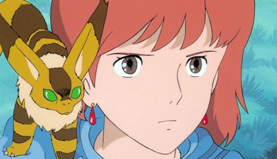

O que é Studio Ghibli?
Fundado em 15 de junho de 1985 por: Hayao Miyazaki, Isao Takahata, Toshio Suziki e Yasuyoshi Tokuma, o Studio Ghibli é um estúdio japônes responsável por marcar a infância de diversas pessoas ao redor do globo com as suas animações lendárias.
Aqui foi listado um TOP 5 melhores filmes em minha opinião!
5 - Nausicaä do Vale do Vento
Nesse filme vemos a natureza reagindo reagindo de forma agressiva a todas as ações do homem. Nausicaã é uma jovem princesa de uma tribo localizada no Vale do Vento. Ao longo do filme, acompanhamos a a jornada de Nausicaã em busca de restaurar a paz entre homem e natureza, ambos em seu alge de selvageria.
Data de lançamento: 11 de março de 1984.
4 - Ponyo: Uma Amizade que Veio do Mar

Ponyo é um peixe que foge de seu pai Fujimoto por ser muito controlador, e após a sua fuga ela encontra Sosuke, uma criança que mora com sua madastra Lisa, e após lamber um pequeno ferimento nas mãos de Sosuke, Ponyo se transforma em humana.
A amizade entre Ponyo e Sosuke é extremamente bem desenvolvida e a trama como um todo te faz criar um carinho com os personagens.
Data de lançamento: 30 de julho de 2010.
3 - Princesa Mononoke
Ambientado na era de ferro do Japão, vemos a história do ponto de vista de Ashitaka, um jovem que seria líder de sua tribo, mas, após enfrentar um espiríto corrompido e ter seu braço ferido em combate, decide ir em busca dos espíritos para ser curado de sua maldição.
Ashitaka descobre que diversas colônias humanas estão em guerra contra os espirítos da floresta para pegar seus recursos e avançar com a sua industrialização. Nessa jornada, Ashitaka conhece uma garota chamada Mononoke, que foi criada por espirítos lobos que são a resistência da floresta. Ao longo do caminho, Ashitaka e Mononoke lutam para restaurar a paz entre ambos.
Data de lançamento: 12 de julho de 1997.
2 - Castelo Animado
Um dos filmes mais famosos do Studio Ghibli. Uma bruxa transforma Sophie em uma mulher de 90 anos, e então, Sophie decide ir atrás de Howl, um feiticeiro que vive em um castelo andante.
A história é baseada em um livro de mesmo nome.
Data de lançamento (Brasil): 15 de julho de 2005
1 - Vidas ao vento
Eis finalmente o meu filme favorito do grande Studio Ghibli!
Baseado em uma história real, vidas ao vento conta a história de Jiro Horikoshi e seu amor pelos aviões. Acompanhamos a sua história desde sua infância até seu desenvolvimento como adulto.
O romance data o periodo de guerra vivido pelo mundo naquele momento. O filme possui cenas emocionantes e uma narrativa espetacular!
Data de lançamento (Brasil): 21 de fevereiro de 2014.